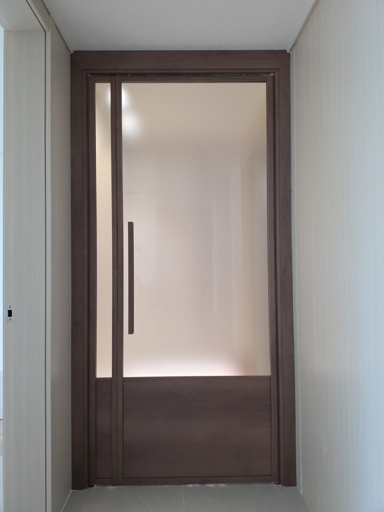
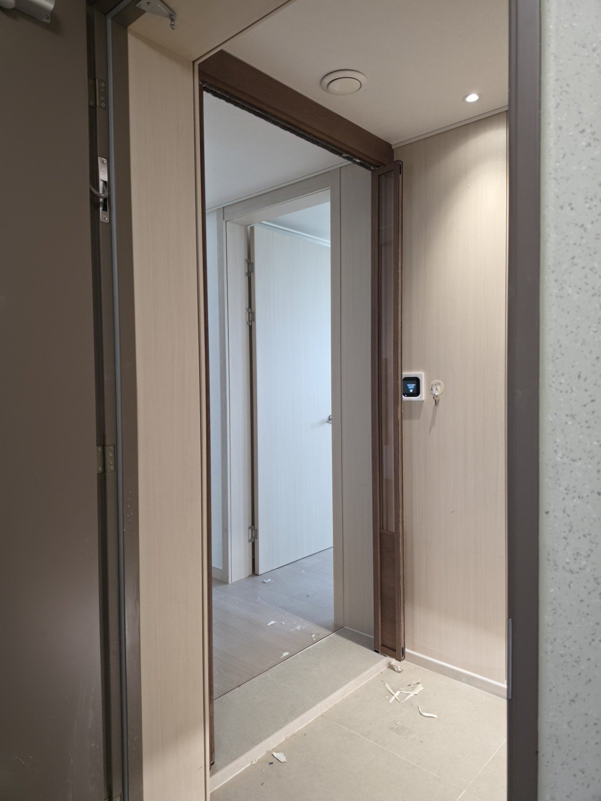
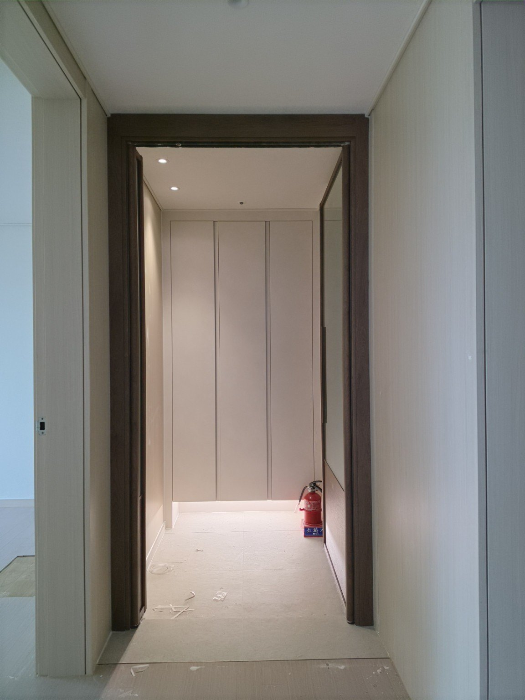
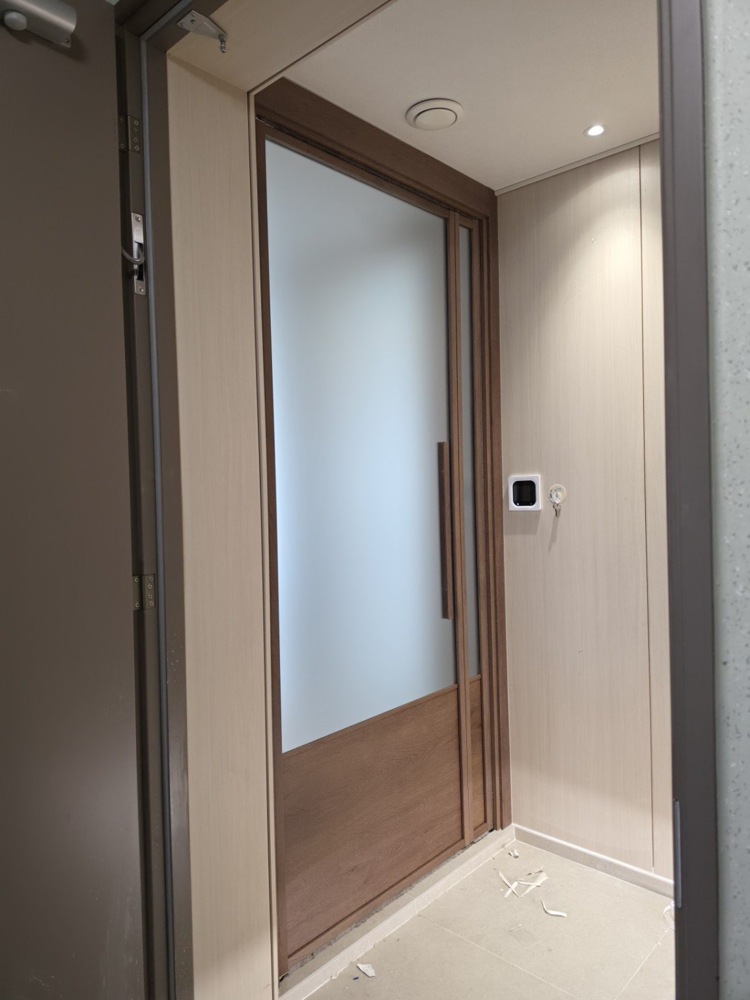
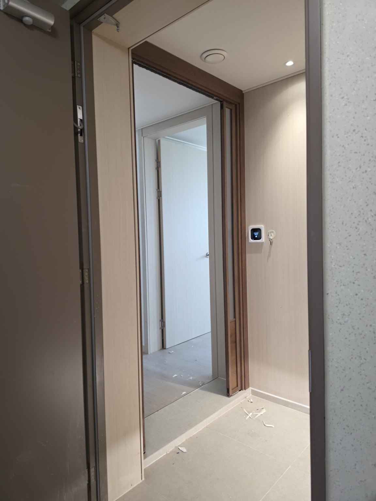
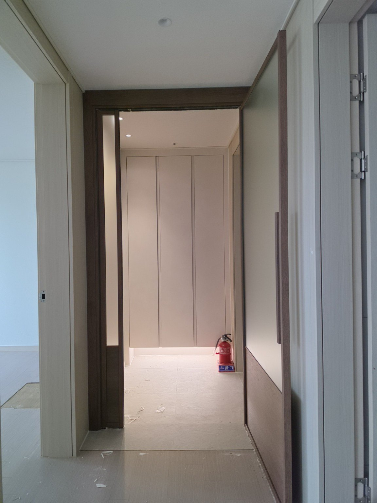
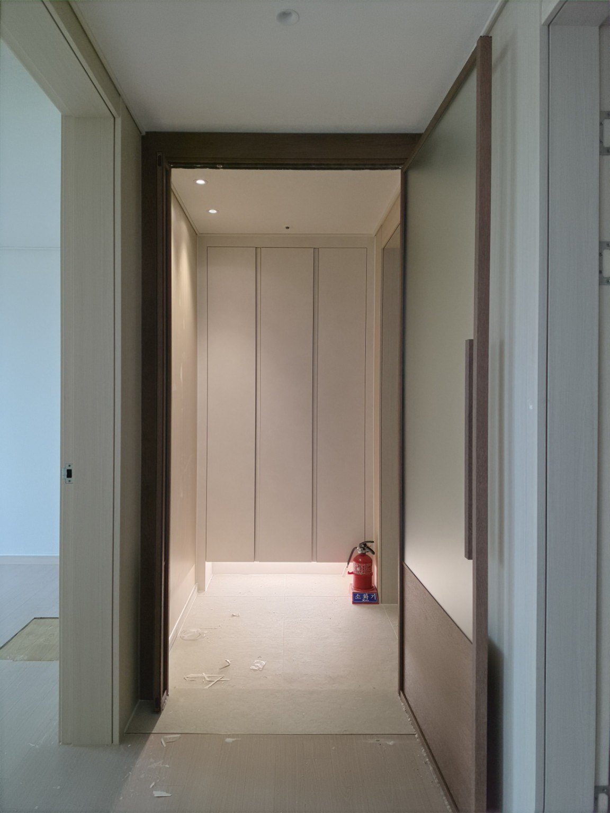
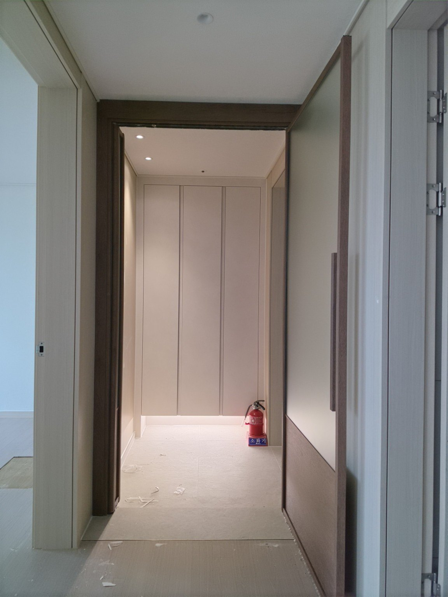
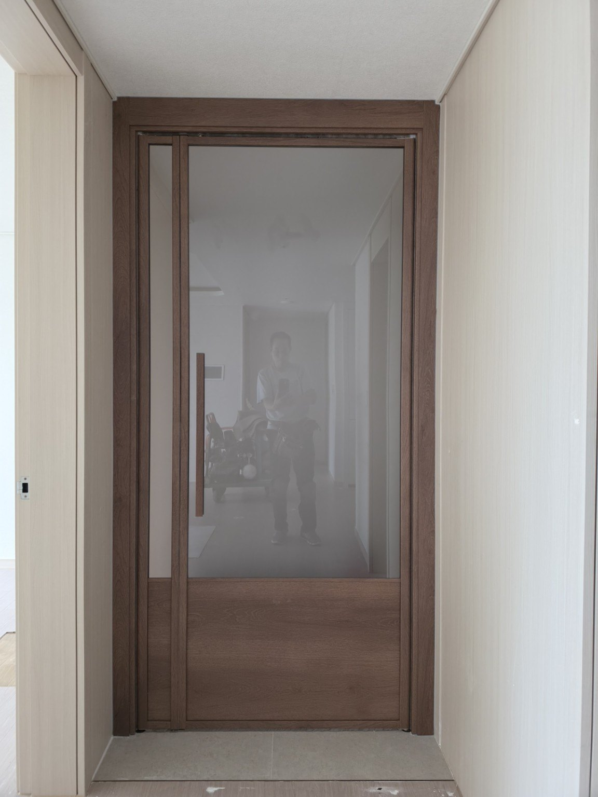
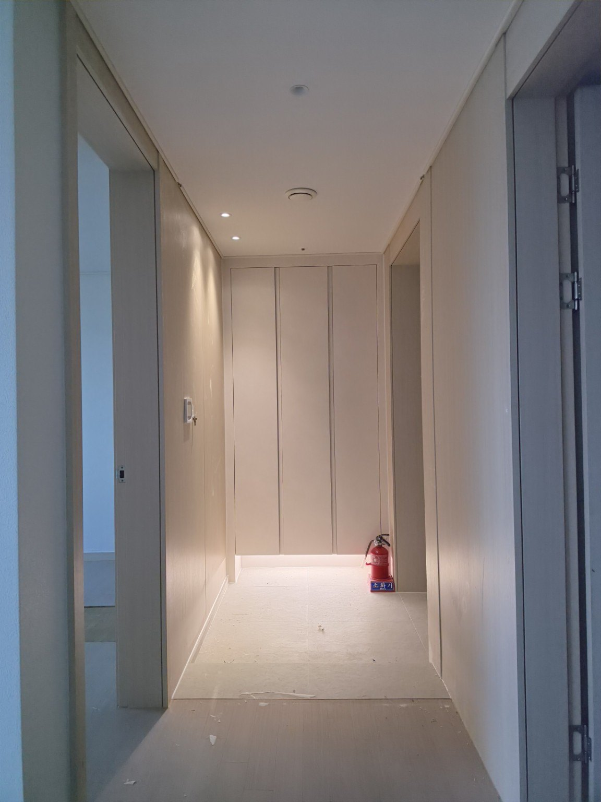

서울 성북구 장위동 장위포레카운티 104동 25평
양방향 비대칭 양개 여닫이 현관중문 시공
장위포레카운티 25평 아파트 현관에 시공한 우드톤 양방향 비대칭 양개 여닫이 현관중문 시공사례입니다.
시공지역 : 서울 성북구 장위동
아파트 : 장위포레카운티 104동
평형 : 25평
시공제품 : 양방향 비대칭 양개 여닫이 현관중문
디자인 : 우드톤 프레임
구성 : 큰 주출입문 + 작은 보조문 비대칭 양개 구성

장위포레카운티 25평 현관중문 시공
이번 현장은 서울 성북구 장위동 장위포레카운티 104동 25평 아파트입니다.
현관과 실내 공간을 구분하면서 출입할 때 편리하게 사용할 수 있도록 양방향으로 개폐할 수 있는 비대칭 양개 여닫이 방식의 현관중문을 시공했습니다.
프레임은 현관 내부의 밝은 벽면과 대비되면서 공간에 따뜻한 느낌을 줄 수 있는 우드톤으로 구성했습니다.
비대칭 양개 여닫이 중문의 특징
이번 중문은 동일한 크기의 두 문짝을 사용하는 방식이 아니라, 평상시 주로 사용하는 큰 문짝과 필요할 때 함께 열 수 있는 작은 보조 문짝으로 구성된 비대칭 양개 방식입니다.
평소에는 큰 문짝을 중심으로 출입하고, 넓은 개방 공간이 필요한 경우에는 보조 문짝까지 함께 사용할 수 있어 현관 공간을 보다 유연하게 활용할 수 있습니다.
장위포레카운티 25평 현관 구조에 맞춰 큰 주출입문과 작은 보조문을 조합한 비대칭 양개 구조를 적용하고, 양방향 개폐가 가능하도록 시공한 현관중문 사례입니다.
우드톤 프레임과 유리 구성
중문의 프레임과 하부 패널을 우드톤으로 통일하여 현관에 안정감 있는 느낌을 주도록 구성했습니다. 상부에는 넓은 유리 면을 적용해 중문이 설치된 뒤에도 공간이 답답하게 막혀 보이지 않도록 했습니다.
문을 닫았을 때와 양쪽 문을 개방했을 때의 모습이 달라 실제 사용 상황에 따라 현관 공간을 다양하게 활용할 수 있습니다.
장위포레카운티 현관중문 시공 사진









문다라 아파트 현관중문 맞춤 시공
아파트 현관은 단지와 평형에 따라 출입구 폭과 구조가 다르기 때문에 현장에 맞는 문짝 구성과 개폐 방식을 선택하는 것이 중요합니다.
문다라는 현관 구조와 사용 동선을 고려하여 여닫이 중문, 양개 중문, 비대칭 양개 중문 등 현장에 맞는 방식으로 제작·시공합니다.